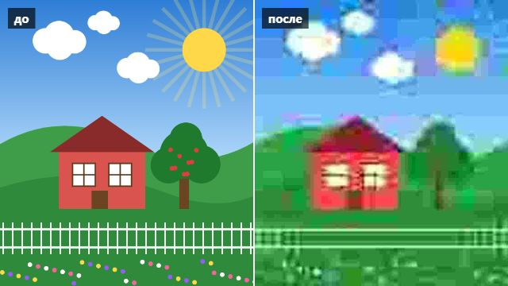
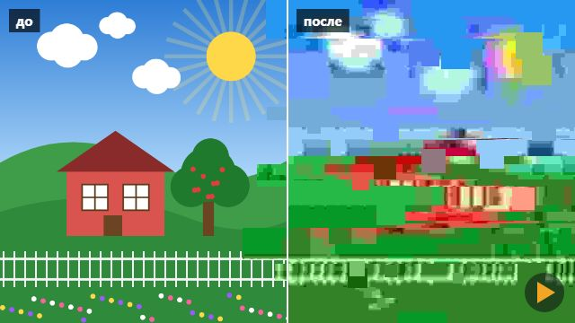
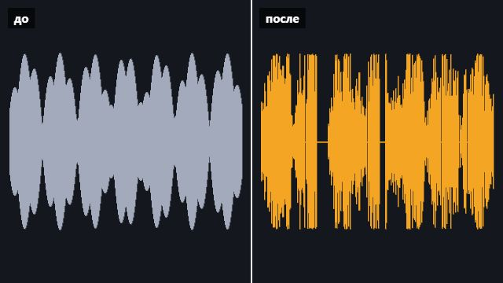
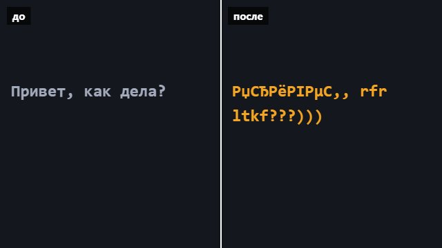
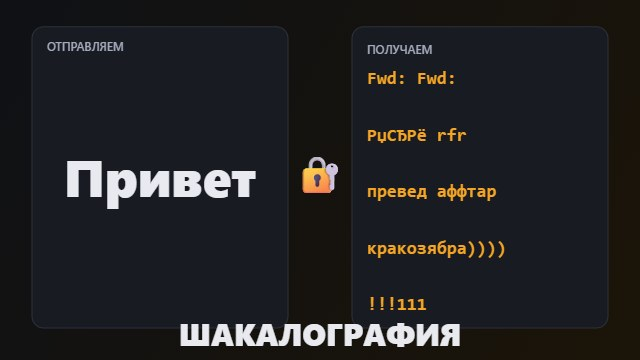

Шакал[изатор]
Контент с душой пятидесяти пересылок.
Бережно. На вашем устройстве.

📷 Фото
Благородное мыло,
честные JPEG-артефакты.

🎬 Видео
Макроблоки, датамош
и звук с историей.

🎧 Аудио
Робот, бульканье
и драматичные паузы.

✍️ Текст
Т9, олбанский
и легендарные пересылки.

🔐 Шакалография
AES внутри. Шакалы снаружи.
Ваше сообщение под защитой.
Обработка и словари — внутри приложения. Без аккаунтов, рекламы и водяных знаков.
Есть веб-версия для фото, видео, аудио, текста и Шакалографии: shakalizator.space. Открывается кнопкой «Веб-версия ↗».